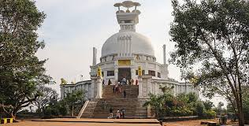
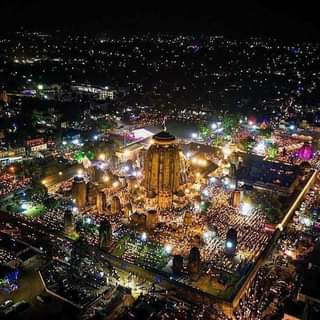

Welcome!
Odisha
Odisha is a state in India.
Odisha (formerly Orissa), an eastern Indian state on the Bay of Bengal, is known for its tribal cultures and its many ancient Hindu temples. The capital, Bhubaneswar, is home to hundreds of temples, notably the intricately-carved Mukteshvara. The Lingaraj Temple complex, dating to the 11th century, is set around sacred Bindusagar Lake. The Odisha State Museum is focused on the area’s history and environment.